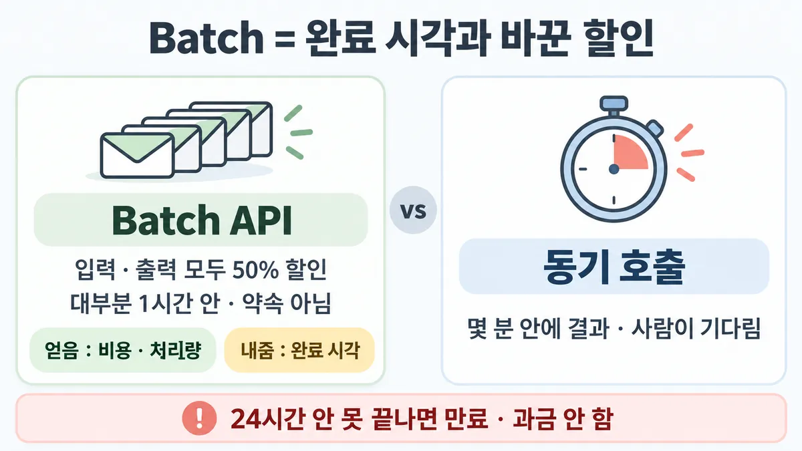
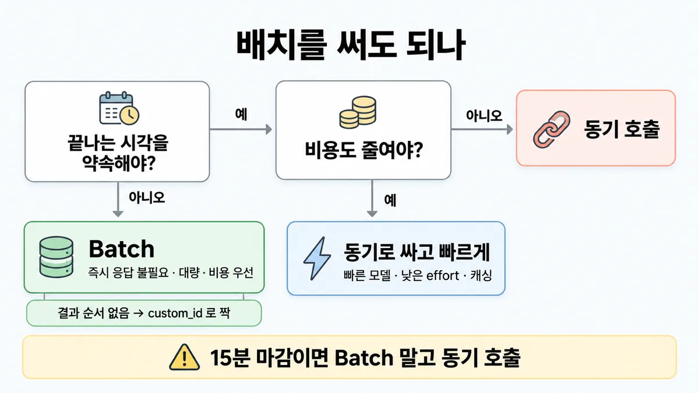

◆ Batch API vs 동기 호출
표시가 없는 문장은 공식 문서에서 확인한 내용이에요. 다른 표시는 읽는 법
왜 배우나 — 시험이 요구하는 것
시험 목표 4.5 토큰·지연·비용 최적화 · D4 평가 16%Optimize token usage, latency, and cost-performance trade-offs
이 개념으로 푸는 판단 (할 수 있어야 하는 것)
- 4.5① 급하지 않은 문서 50만 건 — 비용을 가장 직접 줄이는 것은? — Batch API vs 스트리밍·effort·max_tokens
- 3.3② 매시 쌓인 티켓 5,000건을 15분 안에 분류해 큐로 보내야 한다 — Batch API 로 보내나? — 동기 호출 vs Batch API (완료 시각 약속이 필요한가)
- 1.6③ 한 건에 얼마, 한 달에 얼마? — 비용 축을 숫자로 — 요청당 비용으로 설계안 비교
- 4.5② 보기마다 다른 최적화 — 이 시나리오의 레버는 무엇 하나? — 시나리오 단서 → 레버 하나 (캐싱 · 배치 · 라우팅/effort · 스트리밍)
한눈에


ELI5
택배를 빠른 배송으로 보낼지, 묶음 배송으로 보낼지 고르는 거예요.
- 묶음 배송은 반값이지만 언제 도착할지 딱 정해 주지 않아요.
- 보통은 금방 오지만, 늦으면 하루까지 걸리고 그래도 안 되면 돌아와요.
- 오늘 몇 분 안에 받아야 하는 물건이면 빠른 배송이에요.
- 내일 아침에만 있으면 되는 물건이면 묶음 배송이 이득이에요.
개념 설명
원리
배치 (Message Batches API)
- 요청을 한꺼번에 제출 → 비동기로 요청마다 따로 처리 → 상태를 폴링해 결과 파일을 받음.
- 값 : 입력·출력 모두 표준가의 50%. 처리량도 늘어남.
- 대가 : 끝나는 시각을 약속하지 않음. "대부분 1시간 안"은 관찰이지 약속이 아님. 24시간 안에 못 끝나면 만료.
- 수요가 몰리면 느려지고 만료가 늘 수 있음 — 즉 바쁠 때 더 늦어질 수 있음.
동기 호출 (Messages API)
- 요청마다 바로 응답. 지연(latency)을 줄이는 lever(손잡이 — 캐싱 · effort · 모델 · 스트리밍 · fast mode)를 다 쓸 수 있음.
- 값은 표준가.
둘을 가르는 질문
- 결과를 기다리는 게 사람·다음 단계인가, 아니면 나중에 볼 사람인가?
- 마감이 분 단위인가, 시간·하루 단위인가?
- 비용 절감이 50%만큼 중요한가?
규칙과 판단


갈림길
배치 써도 되나 [4.5①] [3.3②]
동기로 가되 싸고 빠르게
빠른 모델 · 낮은 effort · 캐싱 (■ 지연 줄이기 lever · ■ 프롬프트 캐싱)
동기 호출
배치엔 분 단위 약속이 없음
Batch
즉시 응답 필요 없음 · 대량 · 비용 우선 → Batch. 입력·출력 모두 50% 할인
배치 전 확인할 것 [4.5①]
여러 배치로
한 배치 = 요청 10만 개 또는 256MB 중 먼저 닿는 쪽
배치에서 안 됨
stream: true · fast mode(speed) · max_tokens: 0(캐시 데우기)
보장 없음
배치 안 캐시 적중은 보장 없음(되는 만큼 · 보통 30~98%) → 모든 요청에 같은 cache_control 블록
custom_id
결과 순서 보장 없음 → custom_id 로 짝 맞춤
흐름
그림 속 이름·금액·시간·토큰 수는 예시예요. 공식 한도·동작은 카드 본문 값이 기준.
장면 글로 보기
칸 : 요청 묶음 → Batch 큐 → 결과
블록 : 비전, 도구, 멀티턴, thinking
규칙 (Batch 큐) : 대부분 1시간 안, 약속은 아님 · 24시간 안에 못 끝나면 만료
질문 : 이 묶음, 언제까지 받아야 하지?
① 마감 없는 대량 ✓
- 시작 : 요청 묶음 — 쪽지 : 지난달 상담 8만 건 / 분류 · 다음 주 회의용
- 보냄 : 요청 묶음 → Batch 큐 : 입력·출력 모두 50% 할인 — 쪽지 : requests : 8만 개 / {custom_id:"c-00001"} / …
- 타이머 : Batch 큐 : 대부분 1시간 안, 약속은 아님
- 결과 : Batch 큐 → 결과 : 순서 없이 옴 →
custom_id로 짝 맞춤 — 쪽지 : c-51207 : 배송 / c-00003 : 환불 / c-20981 : 교환 - 끝 : 즉시 응답 필요 없음 · 대량 · 비용 우선 → Batch
② 15분 마감 ≠
- 시작 : 요청 묶음 — 쪽지 : 밤사이 문의 3,000건 / 08:30 넣음 · 08:45 필요
- 보냄 : 요청 묶음 → Batch 큐 : 입력·출력 모두 50% 할인 — 쪽지 : 요청 3,000개 접수 / 끝나는 시각 : 약속 없음
- 타이머 : Batch 큐 : 분 단위 약속이 없음
- 마감 : 결과 : 15분 안 완료를 약속 못 함 — 쪽지 : 08:45 마감 / 끝났다는 보장 없음
- 끝 : 15분 마감이면 동기 호출 — 배치엔 분 단위 약속이 없음
③ 24시간 넘김 ≠
- 시작 : 요청 묶음 — 쪽지 : 상담 기록 8만 건 / 월 09:00 넣음
- 보냄 : 요청 묶음 → Batch 큐 : 입력·출력 모두 50% 할인 — 쪽지 : requests : 8만 개
- 타이머 : Batch 큐 : 24시간 안에 못 끝나면 만료
- 만료 : Batch 큐 → 결과 : 만료된 요청은 과금 안 함 — 쪽지 : 화 09:00 만료 / 못 끝낸 요청 : 과금 0
- 끝 : 24시간 안에 못 끝난 요청은 만료 — 만료된 요청은 과금 안 함
규칙 원문 갈림 기준 배치 규격 (갈림길로 그린 규칙)
갈림 기준
끝나는 시각을 약속해야 하나가 먼저
- 즉시 응답 필요 없음 · 대량 · 비용 우선 → Batch. 입력·출력 모두 50% 할인
- 몇 분 안에 결과 필요 · 사람이 기다림 · 뒤 단계가 결과를 기다림 → 동기 호출. 배치엔 분 단위 약속이 없음
배치 시간 : 대부분 1시간 안, 약속은 아님. 24시간 안에 못 끝나면 만료(만료된 요청은 과금 안 함). 수요가 몰리면 느려지고 만료가 늘 수 있음
- 동기로 가되 싸고 빠르게 : 빠른 모델 · 낮은 effort · 캐싱 (■ 지연 줄이기 lever · ■ 프롬프트 캐싱)
비용 줄이는 공식 순서 : 배치는 세 번째 — 순서 본편은 ■ per-request cost · 규칙 ③ [4.5②] [1.6③]
배치 규격 (판단에 쓰는 것만, 2026-09-28 조회)
- 한 배치 = 요청 10만 개 또는 256MB 중 먼저 닿는 쪽 → 수십만 건이면 여러 배치로
- 결과는 생성 후 29일 보관 · 결과 순서 보장 없음 →
custom_id로 짝 맞춤 - 요청마다 독립 처리 : 하나 실패해도 나머지 영향 없음 · 종류 섞어도 됨(비전·도구·멀티턴·thinking)
- 캐싱 할인과 같이 받음(둘 다 적용). 단 배치 안 캐시 적중은 보장 없음(되는 만큼 · 보통 30~98%) → 모든 요청에 같은
cache_control블록 - 배치에서 안 되는 것 :
stream: true· fast mode(speed) ·max_tokens: 0(캐시 데우기) - rate limit : 배치 API 도 따로 — 요청 RPM + 처리 대기열에 올릴 수 있는 요청 수 (■ rate limit)
- 데이터 : 입력·출력을 최대 29일 서버에 저장(삭제 API 있음) → 보존 규정 판단은 5.4
- Managed Agents 세션엔 배치 모드 없음 (상태 유지·대화형)
더 깊이 : 판단 규칙 · 상황 변수 (설명)
판단 규칙
| 조건 | 답 | 근거 |
|---|---|---|
| 즉시 응답 필요 없음 · 대량 · 비용 최적화 | Batch | batch-processing "well-suited to tasks that do not require immediate responses" |
| 분 단위 마감(예 15분 안에 상담원 큐로) | 동기 호출 | batch-processing (대부분 1시간 · 최대 24시간 · 만료) — 분 단위 약속 문장 없음 |
| 급하지 않은 대량 + 비용 절감이 목표 | Batch (스트리밍·effort 가 아님) | pricing "Use the Batch API for non-time-sensitive tasks" |
| 비용 줄이는 순서를 물음 | 맞는 모델 → 캐싱 → 배치 → 사용 패턴 감시 | pricing |
| 배치 안에서 공통 앞부분이 큼 | 모든 요청에 같은 cache_control · 꾸준한 요청 흐름 | batch-processing |
| 요청 10만 개 또는 256MB 초과 | 여러 배치로 나눔 | batch-processing |
| 결과를 요청과 짝지어야 함 | custom_id (순서 보장 없음) | batch-processing |
| 스트리밍 · fast mode 가 필요 | 배치 불가 → 동기 | batch-processing |
| Managed Agents 세션 | 배치 할인 없음 | pricing |
상황 변수
| 변수 | 값 | 답 쪽 | 등급 | 근거 |
|---|---|---|---|---|
| 마감 | 분 단위 | 동기 | 판단 규칙 2 | |
| 마감 | 다음 날 · 몇 시간 뒤 | 배치 (여유 시간 확인) | 계산 | 뒤집히는 때 2 |
| 기다리는 쪽 | 사람 화면 · 뒤 단계가 막힘 | 동기 | batch-processing | |
| 기다리는 쪽 | 밤사이 쌓아 두고 나중에 봄 | 배치 | batch-processing (대규모 평가 · 모더레이션 · 분석 · 대량 생성) | |
| 건수 | 10만 초과 | 배치 여러 개 | batch-processing | |
| 요청 크기 | 크다 | 256MB 가 10만 개보다 먼저 닿을 수 있음 | 계산 | 뒤집히는 때 3 |
| 공통 앞부분 | 있음 | 캐싱 할인도 같이 받음, 단 적중은 보장 없음(되는 만큼 · 30~98%) | batch-processing | |
| 출력 길이 | 한 건 300k(베타) | 한 건에 1시간+ → 24시간 창 계획 | batch-processing | |
| 데이터 보존 | 서버 저장 불가 요건 | 배치는 최대 29일 저장 → 5.4 에서 판단 | batch-processing |
연습 문제
쇼핑몰이 밤사이 쌓인 문의 3,000건을 유형별로 분류해 아침 8시 30분에 넣고 8시 45분까지 상담원 화면에 올려야15분 마감 한다. 팀장은 "몇 분 늦어도 되는 대량 작업이니 싸게 가자" 며 비용도 줄이라비용 압박고 한다. 어떻게 보낼까?
시험 대비
함정
- "분 단위 지연(latency)은 괜찮은 대량 작업이니 배치로 50%" → 분 단위 약속이 없음. 15분 마감이면 동기
- "배치는 몇 분이면 끝난다" → 대부분 1시간, 최대 24시간
- 비용 줄이려 스트리밍 · effort 올리기 → 스트리밍은 체감용이라 토큰 비용과 무관업계 일반 · effort 를 올리면 토큰이 늘어 비용 증가
- "배치로 보내면 지연도 준다" → 반대. 배치는 비용·처리량을 얻고 완료 시각을 내주는 거래
- 배치에서 캐시 적중을 100% 로 잡고 비용 계산 → 적중은 보장 없음(되는 만큼)
- 긴 출력(300k, 베타) 한 건은 1시간 넘게 걸릴 수 있음 → 24시간 창 안에서 계획
신호
"This approach is well-suited to tasks that do not require immediate responses, with most batches finishing in less than 1 hour while reducing costs by 50% and increasing throughput."
"Batches expire if processing does not complete within 24 hours."
"A Message Batch is limited to either 100,000 Message requests or 256 MB in size, whichever is reached first."
"The Batch API allows asynchronous processing of large volumes of requests with a 50% discount on both input and output tokens."
"cache hits are provided on a best-effort basis."
"Use the Batch API for non-time-sensitive tasks"
더 깊이 : 뒤집히는 때 · 오답 재료 (설명)
뒤집히는 때
1. 대량인데 마감이 분 단위인 때 (동기로 처리량 맞추기)
- 조건 : 30분마다 3,000건이 쌓이고 20분 안에 분류해 넘겨야 함. 비용 압박도 있음.
- 판단 : 배치는 분 단위 약속이 없어 탈락. 동기 호출로.
- 계산 : 20분에 고르게 나누면 3,000 ÷ 20 = 분당 150 요청. 요청당 입력 2,500 토큰 중 공통 지시 2,000 을 캐싱하면 적중 요청은 ITPM 에 500 만 셈 → 분당 약 7만 5천 ITPM (캐싱 없으면 37만 5천). 한꺼번에 몰아 보내면 짧은 폭주로 429 → 고르게 흘림.
- 전제 : 캐시 쓰기 요청은 드묾(5분 안에 계속 적중) · 최소 캐시 길이 이상 · 대부분 모델 기준.
- 등급 : 계산 (ITPM 규칙은 확인)
- 근거 : rate-limits · ■ rate limit ■ 프롬프트 캐싱 · 규칙 ④
2. "다음 날 아침까지"면 배치 — 단 만료 시각이 마감보다 뒤
- 조건 : 18:00 에 제출, 다음 날 09:00 에 결과가 필요 (여유 15시간).
- 계산 : 대부분 1시간 안이라 대개 충분. 그러나 만료는 제출 후 24시간 = 다음 날 18:00 → 마감(09:00)이 만료보다 9시간 빠름. 즉 "만료 안 됐으니 괜찮다"가 마감을 지켜 주지 않음.
- 처방 : 마감 전 확인 시각을 정해 끝나지 않은 요청은 취소·동기로 다시 보내는 대비 (업계 일반). 만료된 요청은 과금 안 됨.
- 등급 : 계산 (1시간 · 24시간 · 만료 과금 없음은 확인)
- 근거 : batch-processing
3. 건수보다 크기가 먼저 닿는 때
- 조건 : 80만 건, 요청 하나가 평균 3KB 라 치자.
- 계산 : 10만 건 × 3KB ≈ 300MB > 256MB → 크기 한도가 먼저. 한 배치 ≈ 256MB ÷ 3KB ≈ 8만 5천 건 → 80만 건이면 배치 10개 (건수로만 셈하면 8개).
- 전제 : 1MB = 1,000KB 로 어림 · 요청 크기는 가정값.
- 등급 : 계산 (10만·256MB 는 확인)
- 근거 : batch-processing
4. 배치로 얼마나 아끼나 (새 숫자)
- 조건 : 위 80만 건, 요청당 입력 1,200 · 출력 300 토큰, Haiku 4.5.
- 계산 : 표준 = 입력 960M 토큰 × $1 + 출력 240M × $5 = $960 + $1,200 = $2,160. 배치 = $0.50 · $2.50 → $480 + $600 = $1,080. 절감 $1,080.
- 전제 : 캐싱 안 씀 · 가격 = 2026-09-28 조회값 · 재시도·만료 없음.
- 등급 : 계산
- 근거 : pricing (Haiku 4.5 표준 $1/$5, 배치 $0.50/$2.50)
- 곁가지 : 공통 앞부분을 캐싱으로 더 깎을 수 있지만 배치 안 적중은 보장 없음(되는 만큼 · 30~98%)이라 절감액을 확정해 약속하면 안 됨.
5. "지연이 괜찮으면 배치"가 틀리는 때
- 조건 : 지문이 "몇 분 늦어도 괜찮은 대량 작업"이라고 함.
- 판단 : "몇 분"은 분 단위 마감. 배치의 시간 약속은 "대부분 1시간 · 최대 24시간"이라 몇 분짜리 허용과 맞지 않음. 허용 지연이 시간·하루 단위일 때만 배치.
- 등급 : (목록 3.3② · 4.5① 의 매력적인 오답)
- 근거 : batch-processing
오답 재료
| 오답 | 왜 끌리나 | 왜 틀리나 | 등급 | 근거 |
|---|---|---|---|---|
| "분 단위 지연은 괜찮은 대량 작업이니 Batch 로 50%" | 대량 + 지연 허용 = 배치로 외움 | 배치는 분 단위 약속이 없음(대부분 1시간 · 최대 24시간) | batch-processing | |
| "비용 줄이려고 스트리밍" | 빨라지면 싸질 것 같음 | 스트리밍은 체감 지연용, 토큰 수 같음 | 업계 일반 | reduce-latency |
| "effort 를 올려 한 번에 맞게 → 비용 절감" | 재시도가 줄 것 같음 | effort 를 올리면 토큰이 늘어 비용 증가 | effort | |
| "배치로 보내면 지연도 줄어든다" | 처리량이 늘어난다니까 | 처리량 ≠ 한 건의 완료 시각. 완료 시각 약속 없음 | batch-processing | |
| "50만 건을 한 배치로" | 한 번에 넣으면 편함 | 한 배치 최대 10만 건 또는 256MB | batch-processing | |
| "배치 결과는 제출 순서대로 온다" | 목록이니까 | 순서 보장 없음 → custom_id | batch-processing | |
| "배치 캐시는 항상 적중하니 캐시 가격으로 계산" | 같은 앞부분이니까 | 비동기·동시 처리라 적중은 보장 없음(되는 만큼 · 30~98%) | batch-processing | |
| "Managed Agents 세션도 배치로 돌려 반값" | 같은 모델 요금이니까 | 세션엔 배치 모드 없음 | pricing |
참고
CCA-F
봄 (Message Batches 구현 동작 — 50% · 24시간 · custom_id) — 여기선 마감 시각(SLA) · 비용 압박 · 데이터 보존을 한 지문에 섞어 "배치를 써도 되나"를 설계 판단으로 물음
개념
출처
- 가이드 목표 4.5 공식 시험 가이드 v1.0
- 가이드 목표 3.3 공식 시험 가이드 v1.0
- 가이드 목표 1.6 공식 시험 가이드 v1.0
- batch-processing
- pricing
- rate-limits
- effort
상태
- 업계 일반 1줄(스트리밍 비용 무관)
미해결
- 목록 4.5① 의 "HIPAA 조직은 Batch 불가(5.4②)" 를 받은 원문에서 못 찾음 (batch-processing '데이터 보존' 절엔 29일 저장 · ZDR 적격성 링크만, 검색어 "HIPAA") — 5.4 카드에서 api-and-data-retention 문서로 확인할 것.
- 배치 API rate limit(속도 제한 — 처리 대기열 요청 수) 숫자 : rate-limits 원문의 표가 받은 파일에 빠져 있음 (defuddle 이 표를 못 옮김). 규칙만 확인.
- "대부분 1시간"이 바쁜 시간대에 얼마나 늘어나는지 공식 숫자 없음.
- 배치 할인과 캐싱 할인을 같이 받을 때의 정확한 배수 계산 : pricing("배수는 Batch API 할인 … 과 중첩")까지만 봄. 적중률이 범위라 확정 계산은 안 함.